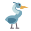

Pecan Grove · Character gallery
Meet the modern Pecan Grove characters
Fourteen editable SVG designs share clean shapes, restrained detail and friendly expressions. The six human portraits retain their story identities, ages, clothing and roles. Their game images are rendered from these vectors at 512 pixels.
Neighbors
Mr. Johnson
Mrs. Ana
Grandma Ruth
Mr. Patel
Jayden
Player avatars
Fox
Owl
Turtle
Rabbit
Deer
Heron

Otter
Bee
This gallery documents the authored artwork. It does not stand in for human recognition testing or an approved visual regression baseline.